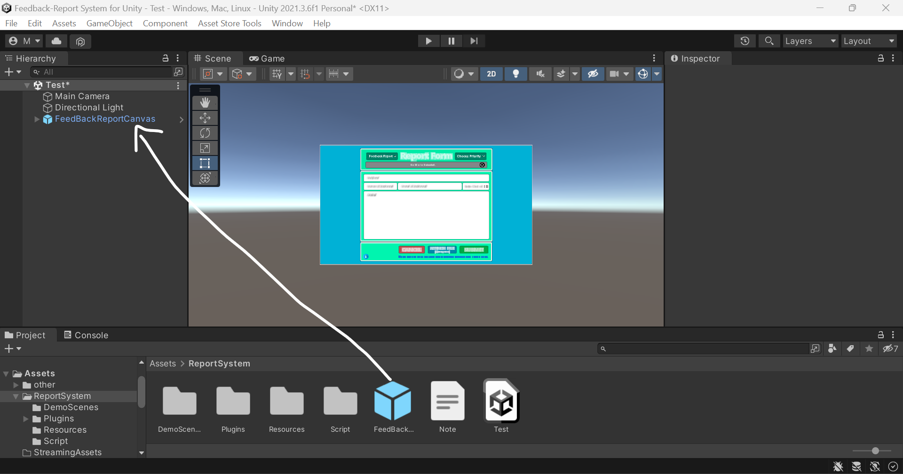
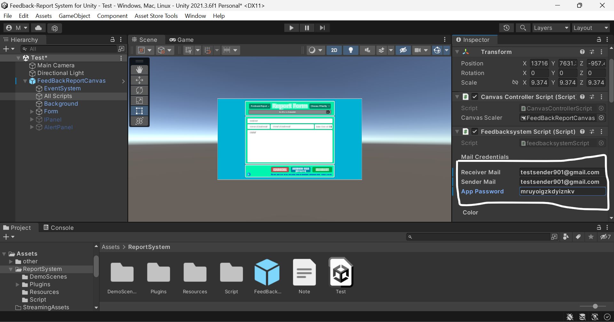

How To Deploy Unity Feedback Report System in Your Project
1. First, import the Unity package from the Asset Store: Feedback Report System
2. Disable "Assembly Version Validation" in "PlayerSettings/OtherSetting/Assembly Version Validation" to solve the "unityplastic.dll not loaded due to errors" issue caused by "Plugins/StandaloneFileBrowser".
3. Drag the prefab named "FeedBackReportCanvas" into your scene.
4. Select the object named "All Scripts" and fill in the fields: "ReceiverMail", "SenderMail", and "SenderMail AppPassword". If you don't know what AppPassword is, watch this video.
5. Now you are ready to use the feedback system.